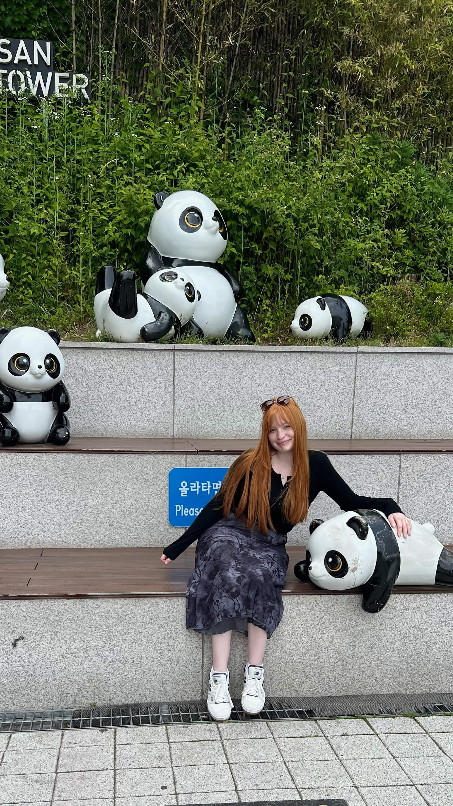
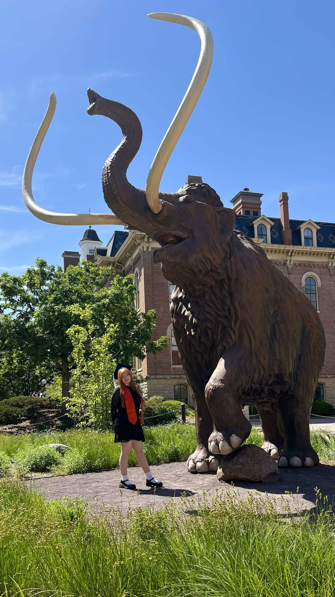
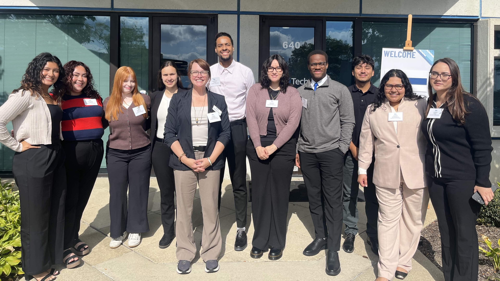

Ashley is an Illinois born girl raised in the central suburbs of Illinois near Chicago. She used to live on a farm with her two parents, sister, and many animals including chickens, goats, horses, and more. She lived there until she went off to college and is now living on her own. After transferring from a community college and graduating from a prestigious university with a degree in biology, she is working on a business minor at a different university. She hopes to use her education to become a healthcare administrator. For now, she is working as an intern for a government medical company as a prerequisite for her business minor. She also keeps busy with her business that she owns and operates alone. She makes keychains based on current pop culture trends and sells them on her own website at https://studiostarfruit.com/. She used to sell on Etsy but has found more success in having her own running website for her bi-weekly merchandise schedule. She’s built up a community for her shop on TikTok and Instagram and has many loyal followers and patrons. She likes to play video games, collect trinkets and travel. She’s been to places all over the world, including Canada, Germany, Iceland, and South Korea. She loved Jeju Island in South Korea, and her favorite part was the Snoopy Garden and the food there. Her favorite trinkets to collect are from blind boxes such as Sonny Angel, Smiski, Miffy, Peach Riot, and many other miscellaneous brands and names from around the world.